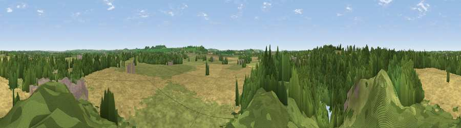

Viewpoint near Stockton
#28779 in England · top 45% of its area beats it · near StocktonWhere it is
The exact computed spot (SP 44525 64325). Click the marker for map links.
The view, rendered

A 360° render of this exact spot computed from the terrain model, tree cover and land cover — summer colours, afternoon light, calibrated against photographs of famous viewpoints. Real trees, hedges and buildings will differ in detail.
The panorama
Grey silhouette: terrain skyline in each direction (720 bearings, Earth curvature and refraction included). Dashed green: skyline with trees (+15 m) and buildings (+8 m) as obstacles. Blue strip: how far the ground is visible on each bearing.
Where the view opens
Wedge length = distance to the farthest visible ground on that bearing (vegetation-aware). Rings at 10, 25 and 50 km.
What fills the view
34% grassland · 31% woodland · 30% cropland · 4% built-up · 1% water
Angular shares of the visible panorama (visual magnitude), not map area. Landscape diversity 0.55 (0–1 Shannon).
Key numbers
More beautiful places nearby
The staircase of upgrades: each row has a higher view potential than everything closer. Driving times are estimates from straight-line distance, calibrated against real road routing — check an actual route before setting out.
| Place | Direction | Drive | Score |
|---|---|---|---|
| Viewpoint near Ladbroke | SSW · 5 km | ~11 min | 45.5 |
| Beacon Hill | SE · 6 km | ~12 min | 62.2 |
| Black Down | SE · 11 km | ~20 min | 64.5 |
| Big Hill - Staverton Clump | ESE · 11 km | ~21 min | 68.4 |
| Viewpoint near Northend | SSW · 13 km | ~24 min | 69.7 |
| Viewpoint near Northend | SSW · 14 km | ~25 min | 70.3 |
| Viewpoint near Radway | SSW · 17 km | ~30 min | 71.7 |
| Viewpoint near Ilmington | SW · 32 km | ~50 min | 72.6 |
52.27528, -1.34885 · source: screening · position refined by local search. Computed location — check access rights before visiting.